a dream sensation, life in berlin (2017)
Feeling feelings with higher highs and lower lowers in a place with actual seasons.
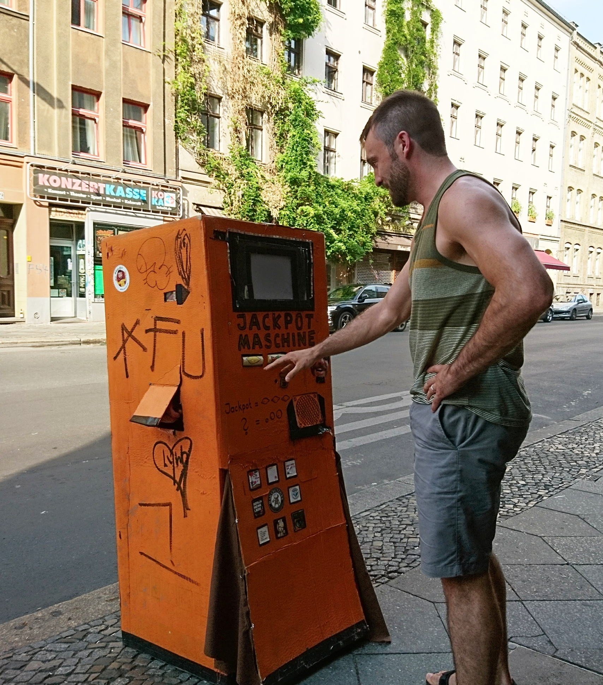
Everyone eventually comes to Berlin, many will eventualy leave.
Malwine was telling me about Berlin syndrome where people who live there don’t get too attached because they know their friends will eventualy go.
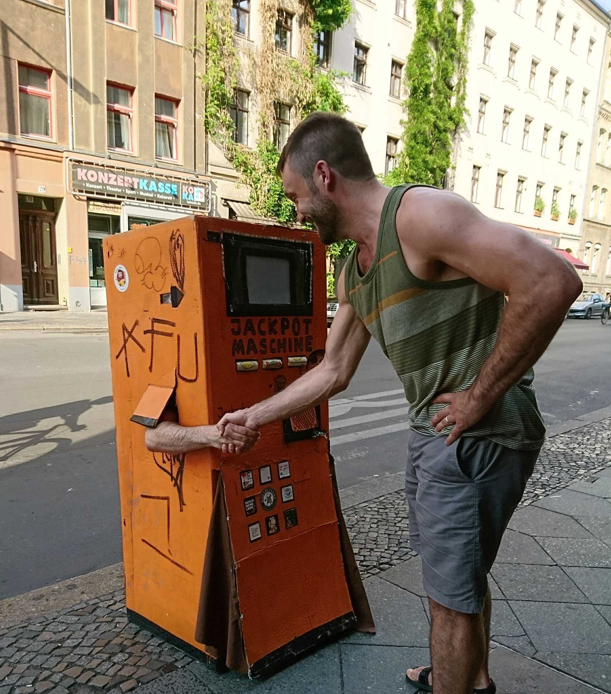
I spent a summer hanging out with clojure folks, drinking turkish coffee, and thinking about what I wanted to do with my time. Feeling free from a perscribed schedule to ride my bicycle and swim in the lakes outside the city, but missing something still. Picking up a lot of books, and trying to learn languages, calling home and catching up with friends far away, enjoying the dense german bread. Trying to unclench from a constant feeling of loss and guilt, and not being enough.
(I moved back to California in 2018.)
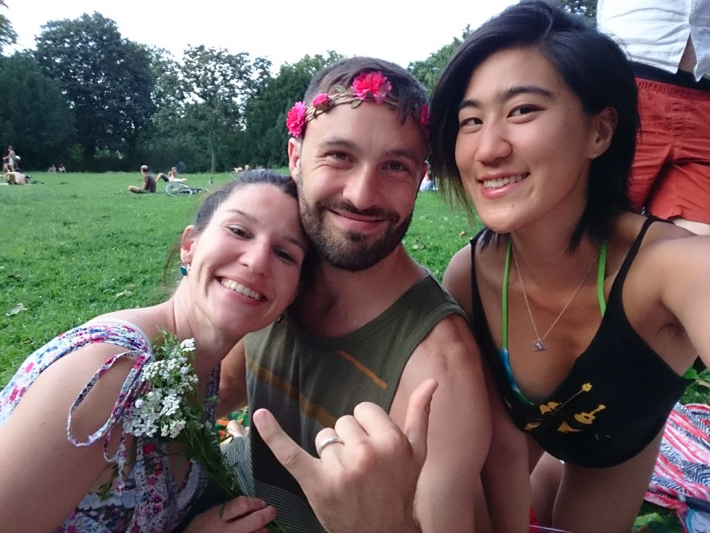
(It’s February 2020 now as I find this in my neglected blog drafts. I can’t remember what I had tried to say before and what it meant to me, so I am looking at old photos and text journals and reading notes to pick up the pieces.)
(How can I forget the name of the park I lived next to and ran a triangle in so many mornings? the ubahn I took to the coworking space for clojurebridge meetings?)
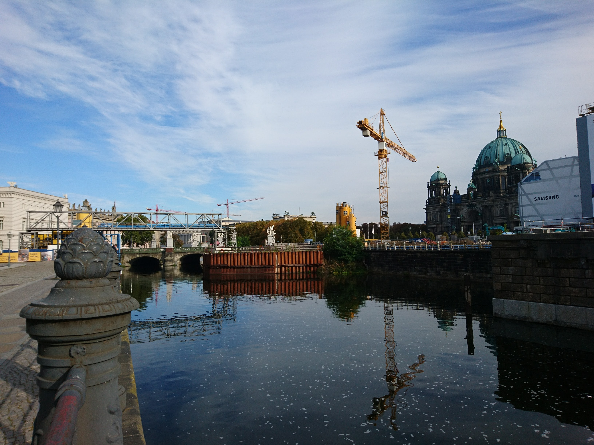
>20170727
This morning I woke up an hour before my alarm and THE SKY WAS BLUE. It was supposed to rain the entire week so I immediately threw my stuff into my pack and went on an hour-long bike ride!
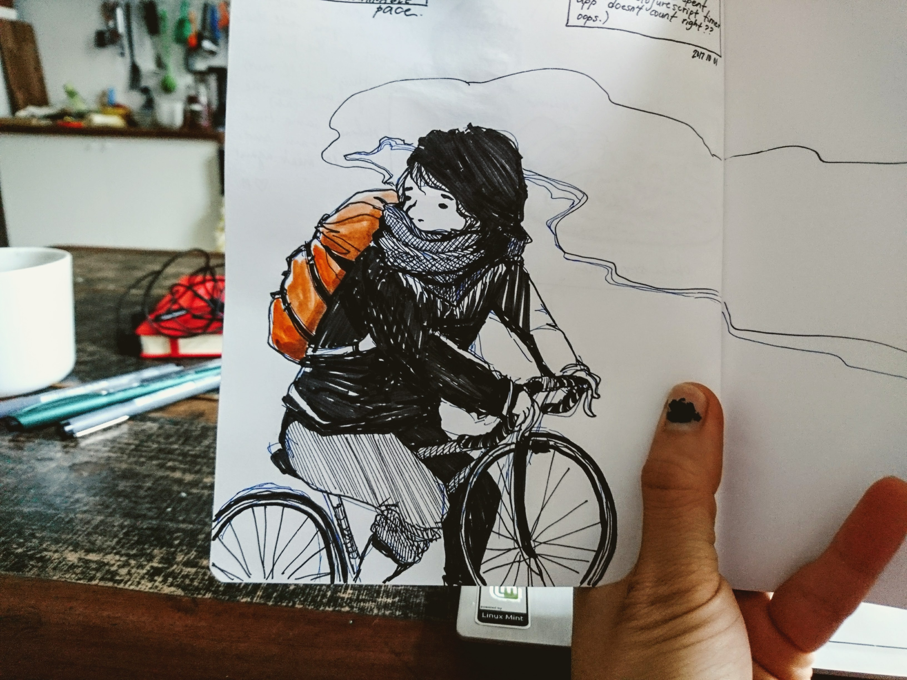
>20170714
Saskia talks a lot about mind/body balance, and it’s different words for one of my top concerns, except I say it like “I like cities, but I also need mountains”. The cities are full of people and jobs and programming communities and structure; the mountains is where I can move and breathe and be alone.
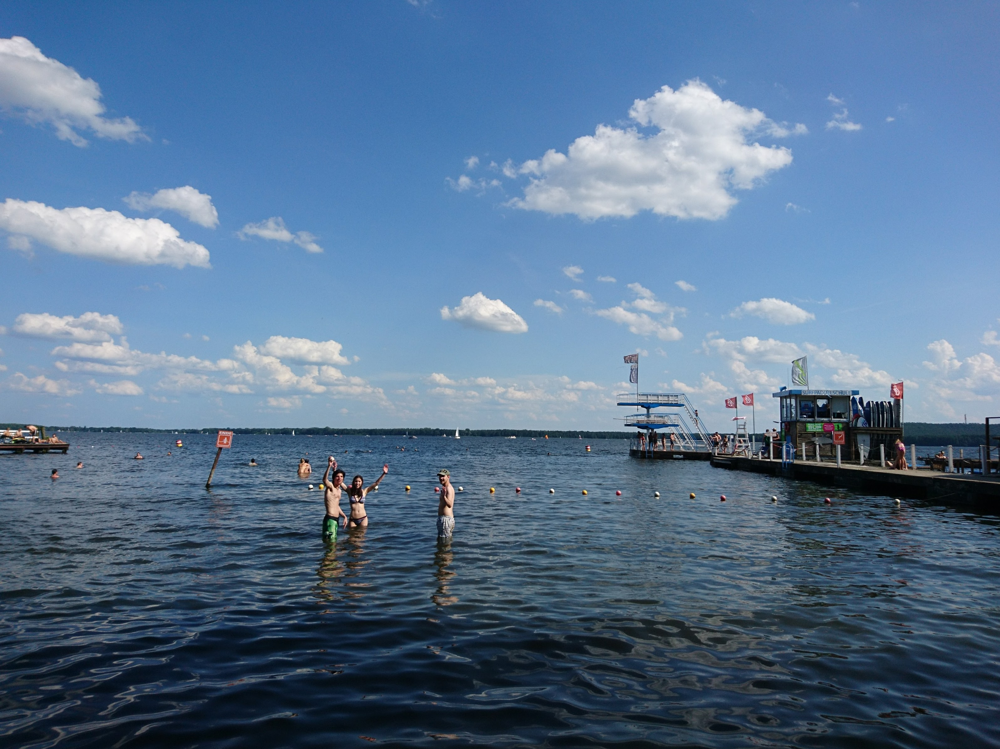
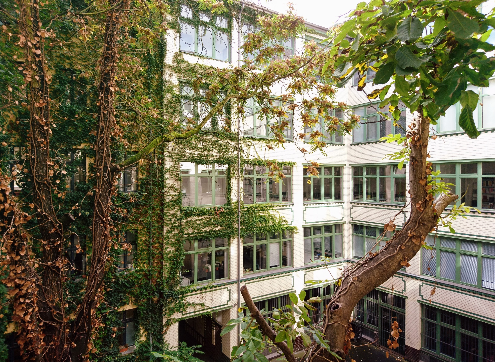
>20170811 F
things Dave sent me to read:
Kafka’s “before the law” & companion
the opressiveness of structurelessness.
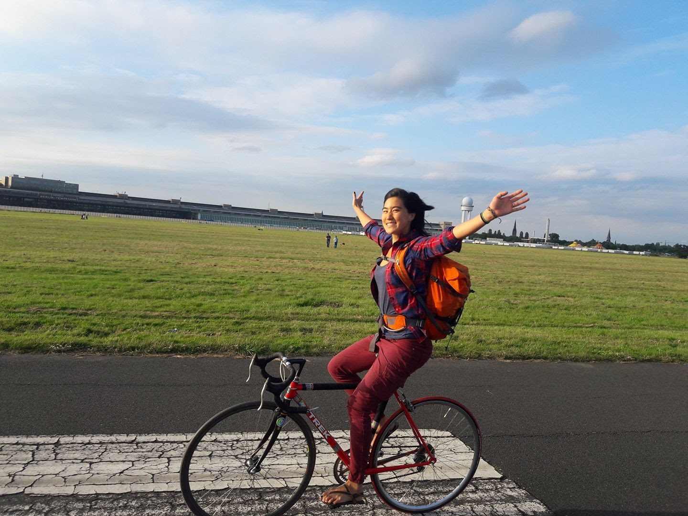
>20170805
Everything that’s excellent about me and that makes me happy I owe to being happy and having free time! Drawing as a kid, learning graphic design tools then a tablet with online tutorials, learning CSS and html then programming.
Today I put on my bathing suit and spend a couple hours fixing my bike. I unscrewed everything and now I see how the pieces go together. Not even feeling guilty for “wasting time” because I have enough of it! living slow = learning, exploring, creativity, expression.
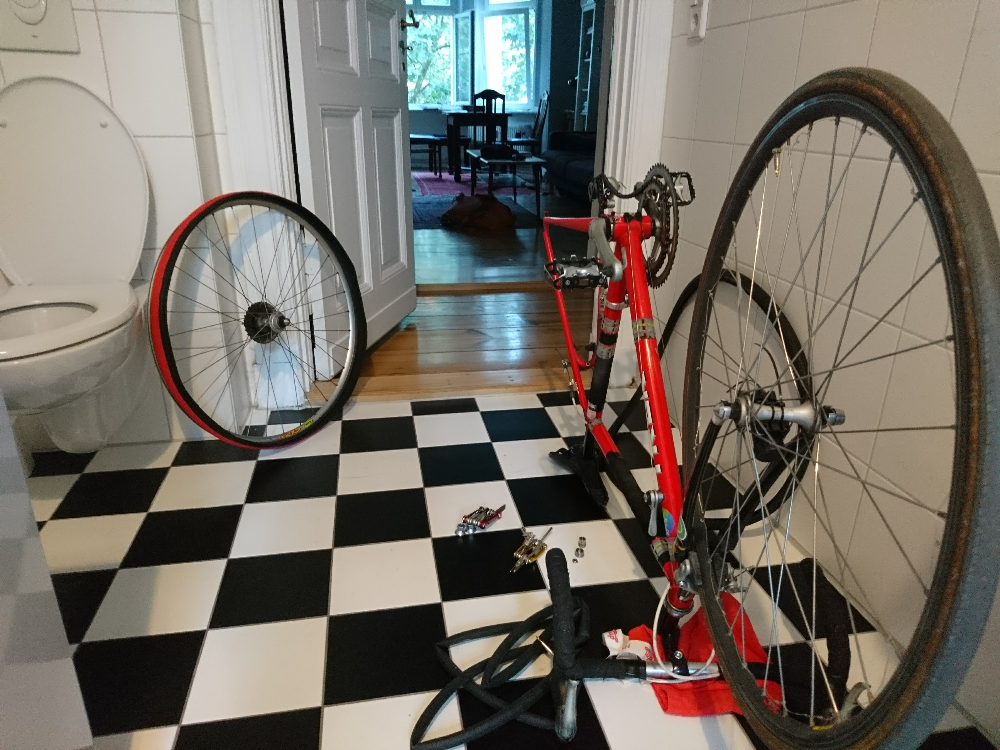
>20170831
I ran 5k today! It is my first 5k. […] But I did it! From now on all my runs will be 5k, which is “a short run” a la Noah Tye. I’ll run every other day. (:
>20170821
“Emotional hurt is the price one has to pay in order to be independent. In certain areas of my life, I actively seek out solitude. Sometimes, however, this sense of isolation, like acid spilling out of a bottle, can unconsciously eat away at a person’s heart and dissolve it. You could see it, too, as a kind of double-edged sword. It protects me, but at the same time cuts away at me from the inside. I think in my own way I’m aware of this danger – probably through experience – and that’s why I’ve had to constantly keep my body in motion, in some cases pushing myself to the limit, in order to heal the loneliness I feel inside and put it in perspective. Not so much as an intentional act, but as an instinctive reaction. […] it’s like I can physically exhaust that portion of my discontent.”
– Haruki Murakami, What I Talk About When I Talk About Running
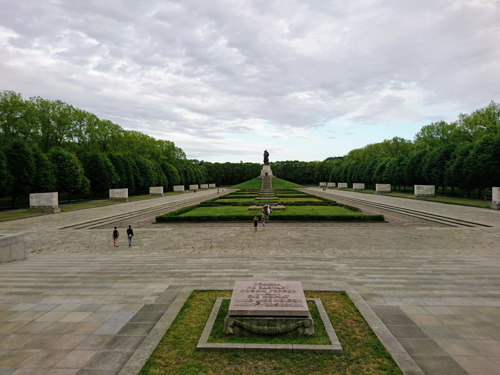
“I have wanted to kill myself a hundred times, but somehow I am still in love with life. This ridiculous weakness is perhaps one of our more stupid melancholy propensities, for is there anything more stupid than to be eager to go on carrying a burden which one would gladly throw away, to loathe one’s very being and yet to hold it fast, to fondle the snake that devours us until it has eaten our hearts away?”
– Voltaire, Candide
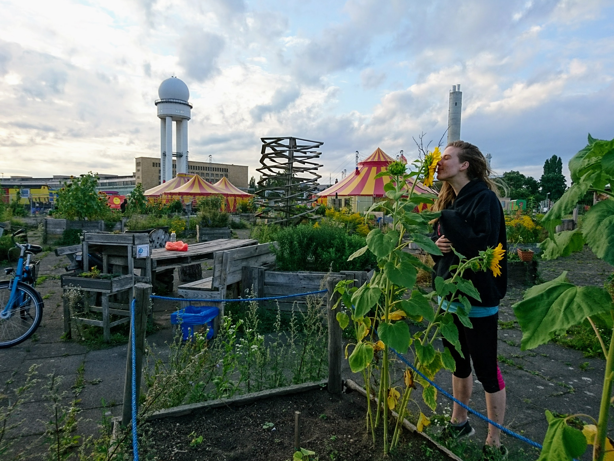
>20170909
omfg curse John Furrow for getting me into Big Black Delta, I’ve been listening to Trágame Tierra, then BBD back to back to back to back all summer.
I baked a lot because baking has always felt like a waste of time, and wasting time lavishly made me feel powerful and in control.
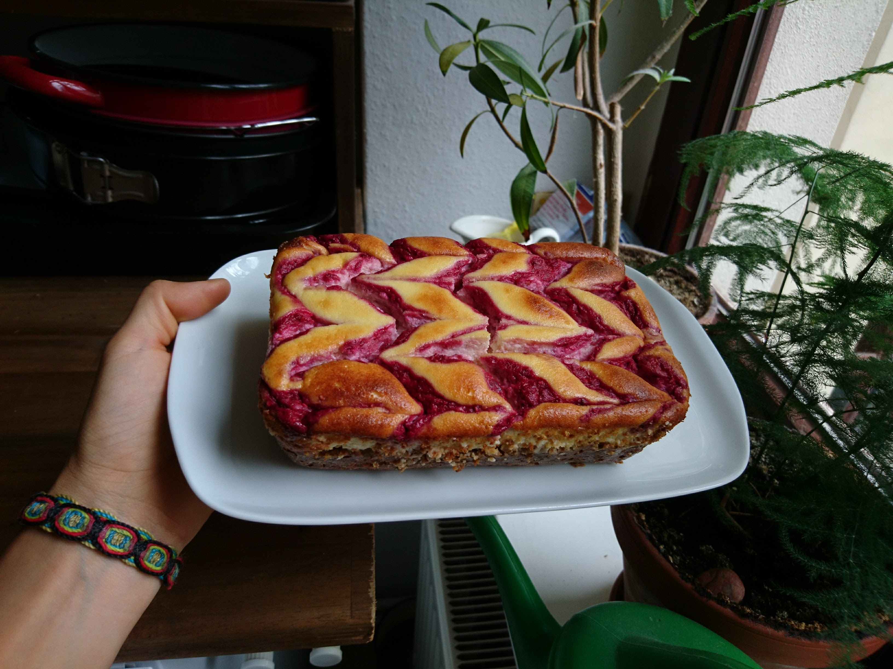
(German quark cheese cake is really good, but you should just buy it at the store.)
>20170829
[…] (and all-time low for facebook/instagram though […] I’d gotten to the point last year where facebook was for seeing my friends’ mountain photos, and now those just make me sad)
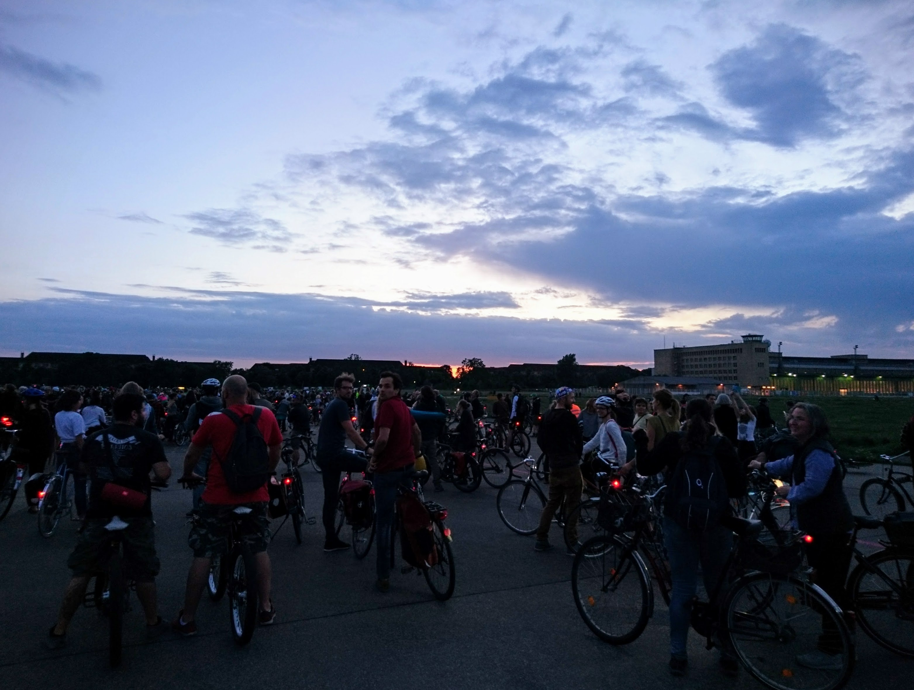
>20170814 M
I shouldn’t call my life boring, because it’s definitely not boring. It has the flavor of unremarkable that settles after solving all the problems. Maybe it’s because I’ve never not lived teetering on the brink of madness. I think I literally don’t know how to chill.
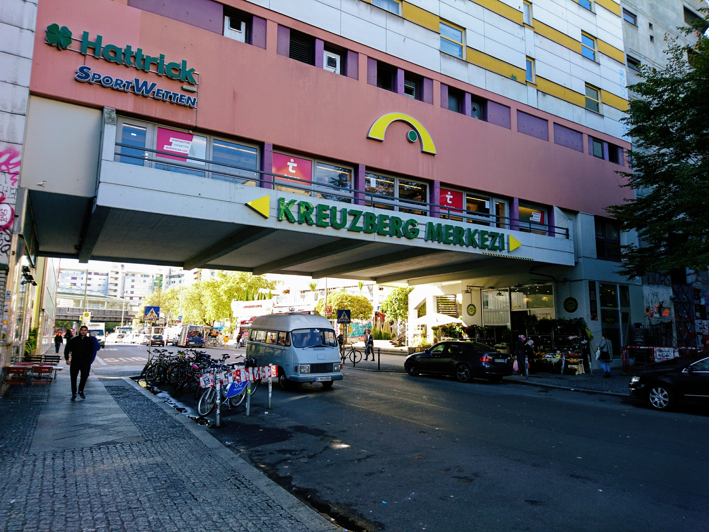
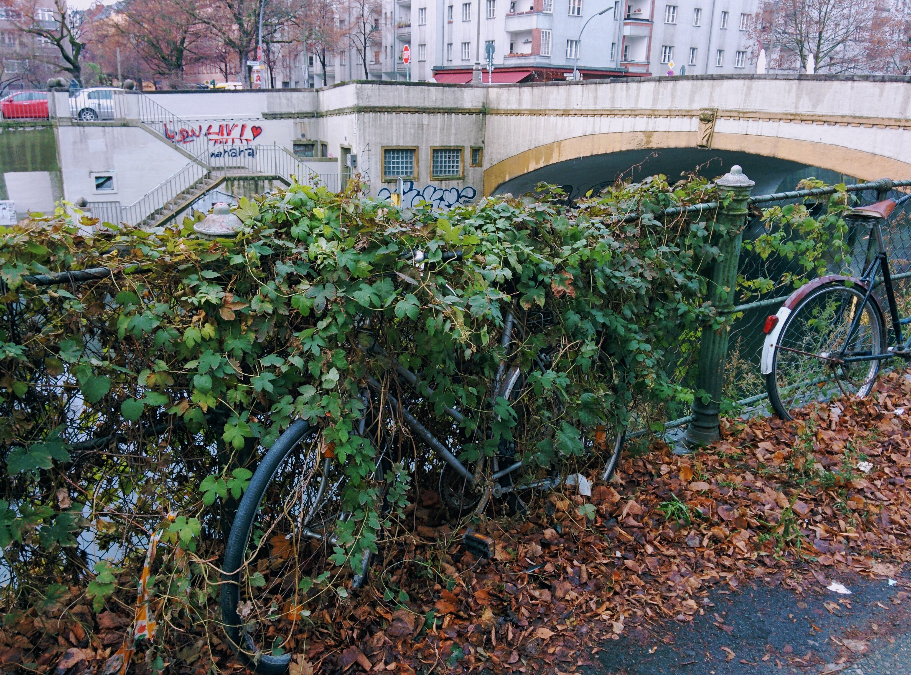
>20170912
“I’d rather make money and spend it than make less money and try to figure out how to be tricky with it.” —dennis heihoff
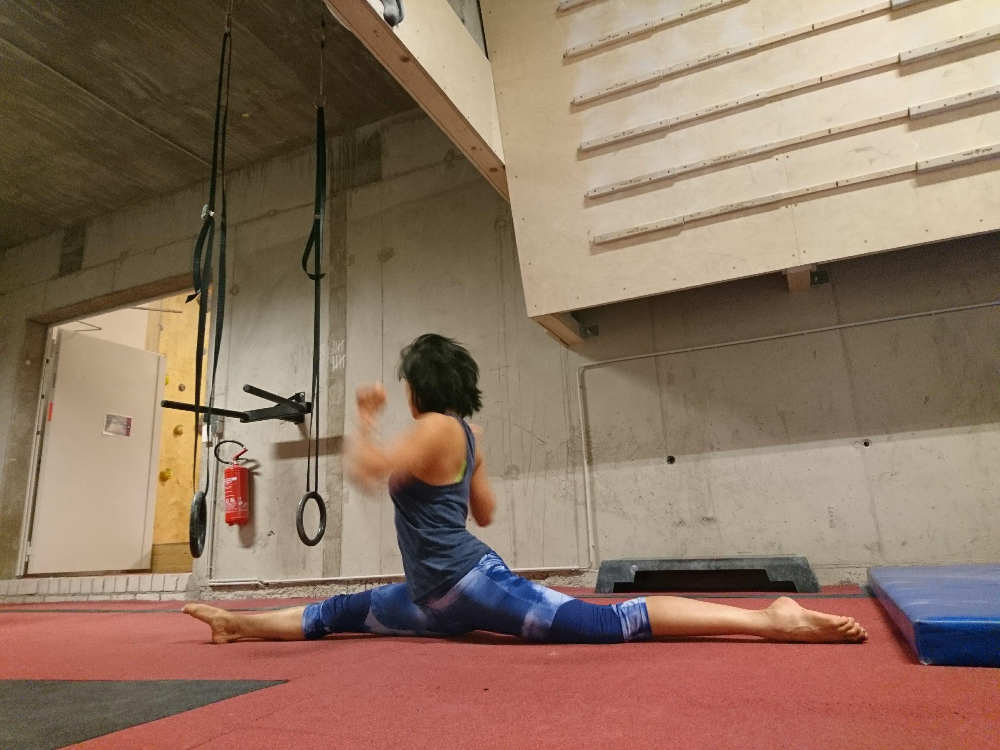
"No relation of a dream can convey that dream sensation. That commingling of absurdity, surprise and bewilderment in a tremor of struggling revolt. That notion of being captured by the incredible, which is the very essense of dreams.
It is impossible. It is impossible to convey the life sensation of any epic of one’s existence. That which makes its truth, its meaning, its subtle and penetrating essense. It is impossible.
We live as we dream, alone."
Joseph Conrad, Heart of Darkness
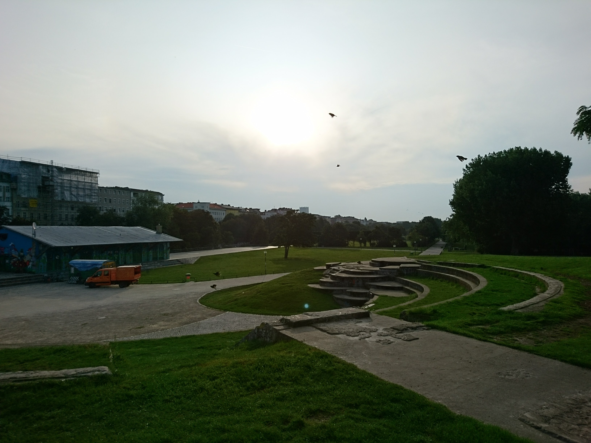
Edited: 2020-02-27
comments
No comments at the moment. Hey, you could write one \o/